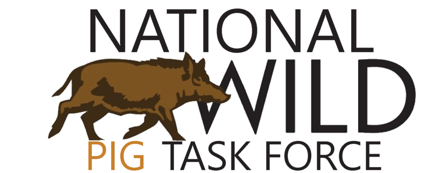

The NWPTF logo combines a brown wild-pig illustration with the wordmark ("PIG" set in tan). Use it directly on light surfaces. On dark backgrounds, place it on a bone "chip" rather than recoloring the mark; this keeps the pig and wordmark crisp. Always preserve clear space and never recolor or distort the logo.

An earthy palette of greens, tan, and rust. Each color is defined once at the top of the stylesheet and reused across the site, so changing a value updates it everywhere. The CSS variable name is listed under each swatch.
Playfair Display (serif) for headings; Source Sans 3 (sans-serif) for body and UI. Loaded from Google Fonts.
Body text is set in Source Sans 3 at 17px with a 1.6 line height. It carries the bulk of the content and is tuned for comfortable reading across the site. Inline links use the rust accent.
Cards use a white surface, a 1px line border, and a colored top or left accent that shifts to rust on hover.
Call to actionA bordered card with a tan left rule, used for supporting points and value statements.
This defines how NWPTF sounds across its channels. Use it when writing or reviewing any public-facing content. It applies to the website, Facebook, and LinkedIn, with channel-specific adjustments noted below.
NWPTF is the steady, science-based voice in the room. Wild pigs are a topic people joke about and panic about; our job is to be the credible source that neither jokes nor panics. We convene the conversation rather than fight to be part of it.
Three words anchor the voice:
We speak with the confidence of an organization that coordinates the science and the partners. We don't justify our existence or sound defensive. We state things plainly because we know them.
We write in plain language. Professionals and policymakers both reward clarity, and jargon makes us sound less credible, not more. Say "crosses property lines, jurisdictions, and disciplines," not "operates within a multi-stakeholder landscape-scale framework."
We give credit to the people doing the work: researchers, agency biologists, landowners. Warmth comes from being matter-of-fact and from caring about people, not from punchlines. A little dry wit is welcome; jokes-for-the-sake-of-jokes are not.
1. Natural resource professionals (primary) · 2. Policymakers (primary) · 3. Landowners (tertiary). Write for the first two by default. When landowners are the point, name them directly.
Our home base and most formal channel. It's where we establish credibility and where professionals and policymakers come to find resources they can trust.
Tone: Authoritative and clear, slightly more reserved than social. Informative over conversational. Confident, never stiff. Use it for: The Issue, Research, Resources, About, and similar evergreen pages.
Wild pigs are one of the most destructive invasive species in North America. They damage crops, degrade habitat, and threaten native wildlife, and no single tool solves the problem. The Task Force coordinates the research and partnerships needed to control them effectively.
Our most social, human channel. The audience is broader and more mixed, and the platform rewards warmth and conversation.
Tone: Warm, plain-spoken, a notch more casual than the website. Confident and human. Light dry wit is welcome. Use it for: Timely posts, reactions to coverage, community engagement, spotlighting people and partners.
Here's what it gets right: wild pigs are a big, messy problem with no single fix. The people who move the needle are researchers, agency biologists, and landowners working it from different angles, often without much recognition. Working on wild pigs where you are? Tell us what you're seeing.
Our professional channel. The audience is here to learn, find resources, and connect with credible organizations.
Tone: Professional and credible, warmer than the website but more measured than Facebook. The knowledgeable colleague at their most polished. Use it for: Research highlights, policy-relevant framing, partnership announcements, professional resources, thought leadership.
The segment captures the heart of the problem: wild pigs don't respect property lines, jurisdictions, or disciplines, which is exactly what makes them so hard to control. Real progress comes from patient, coordinated work, turning research into tools that landowners and agencies can use on the ground. If wild pig control is part of your work, follow along here.
| Website | |||
|---|---|---|---|
| Register | Most formal | Most casual | Professional |
| Humor | None | Light, dry | Minimal, dry |
| Opening | The main point | A relaxed hook is fine | The substance |
| Call to action | Use/cite the resource | Invite conversation | Follow / nwptf.org |
| Primary job | Establish credibility | Build community | Reach professionals |
Across all three: authoritative, accessible, human. No em dashes.